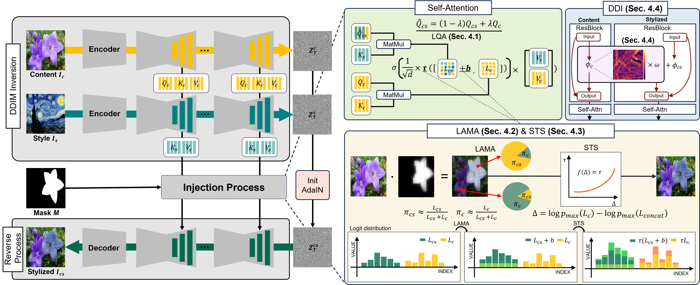
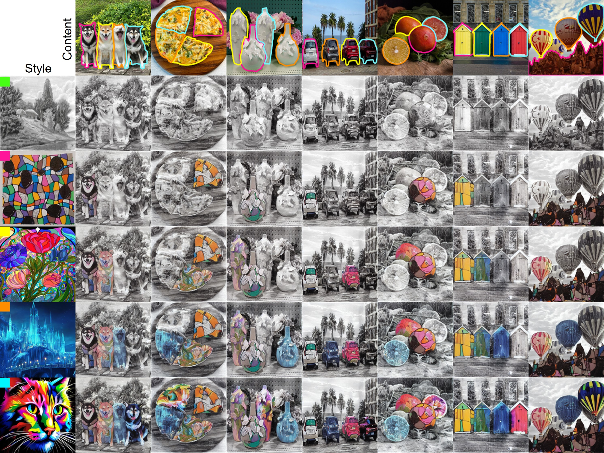
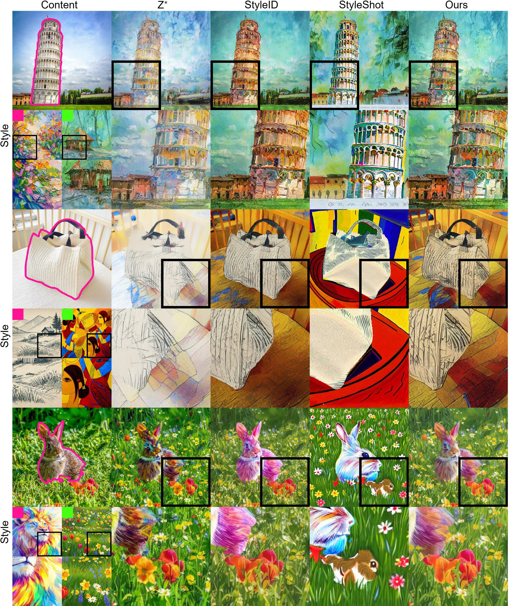

Overview of the proposed MAST framework. (Left) The stylized pipeline employs DDIM inversion and AdaIN-based initialization, where style is injected through attention modulation during the denoising process. (Right) Our attention control framework comprises four core modules: LQA anchors the semantic layout using content queries; LAMA achieves precise region-wise control via logit-level mass allocation; STS restores stylistic focus by sharpening the attention distribution; and DDI preserves structural fidelity by injecting high-frequency content details.
Style transfer aims to render a content image with the visual characteristics of a reference style while preserving its underlying semantic layout and structural geometry. While recent diffusion-based models demonstrate strong stylization capabilities by leveraging powerful generative priors and controllable internal representations, they typically assume a single global style. Extending them to multi-style scenarios often leads to boundary artifacts, unstable stylization, and structural inconsistency due to interference between multiple style representations.
To overcome these limitations, we propose MAST (Mask-Guided Attention Mass Allocation for Training-Free Multi-Style Transfer), a novel training-free framework that explicitly controls content-style interactions within the diffusion attention mechanism. To achieve artifact-free and structure-preserving stylization, MAST integrates four connected modules.
First, Layout-preserving Query Anchoring prevents global layout collapse by firmly anchoring the semantic structure using content queries. Second, Logit-level Attention Mass Allocation deterministically distributes attention probability mass across spatial regions, seamlessly fusing multiple styles without boundary artifacts. Third, Sharpness-aware Temperature Scaling restores the attention sharpness degraded by multi-style expansion. Finally, Discrepancy-aware Detail Injection adaptively compensates for localized high-frequency detail losses by measuring structural discrepancies. Extensive experiments demonstrate that MAST effectively mitigates boundary artifacts and maintains structural consistency, preserving texture fidelity and spatial coherence even as the number of applied styles increases.

Styles are sequentially added (top to bottom) within a fixed five-style mask setting. MAST ensures strict spatial adherence to mask boundaries and prevents inter-style interference even as stylistic complexity increases. Throughout the progression, our method consistently maintains high-fidelity object structures and seamless transitions between diverse styles.

Comparison with strong baselines in the 2-style setting (green: background). Zoomed-in views of the reference style images and the corresponding stylized regions highlight how faithfully each method transfers local style attributes, such as texture patterns and color tones. Our method better preserves the characteristic style details of each reference while producing more coherent stylization results.
@article{mast2026,
author = {Author names here},
title = {MAST: Mask-Guided Attention Mass Allocation for Training-Free Multi-Style Transfer},
journal = {Conference / Journal name},
year = {2026},
}